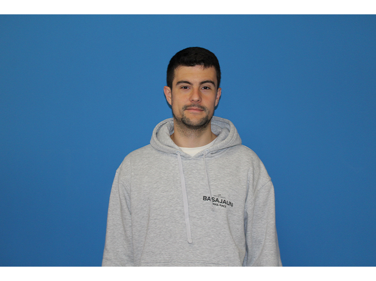

About me
Currently I am a PhD student in machine learning at the Basque Center for Applied Mathematics (BCAM) in Bilbao, under the supervision of Aritz Pérez and Andrés Masegosa. I am happy to announce that starting next semester I will be a Research Associate (postdoc) at the Manchester Centre for AI Fundamentals .
My research interests lie at the intersection of machine learning and mathematics, with a focus on learning theory, generalization bounds, and Bayesian methods.

Contact & Links
- Email icasado@bcamath.org
- GitHub github.com/icasado-telletxea
- Scholar Google Scholar profile
News
- [02/2026] I will be visiting the University of Manchester hosted by Omar Rivasplata.
- [01/2026] Contributed talk at Congreso Bienal de la Real Sociedad Matemática Española (RSME).